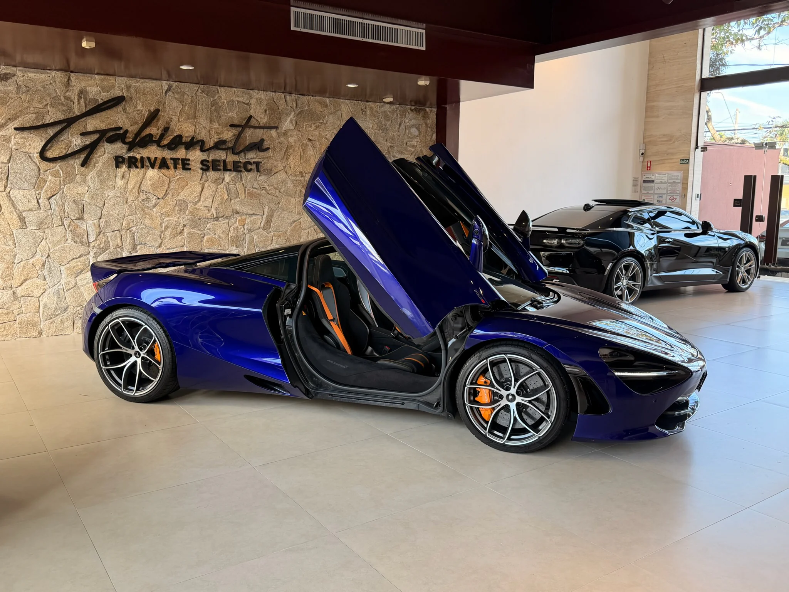
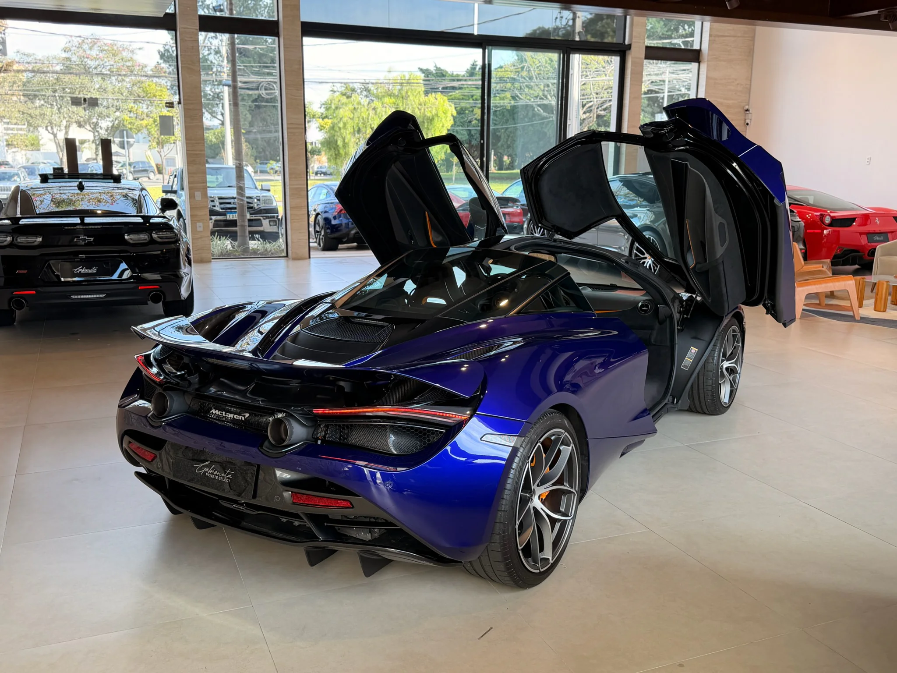

MRG Motors



McLaren 720S
4.0 V8 Turbo • 720cv • Lantana Purple
R$ 3.200.000
- Ano
2022/22
- KM
7.000 km
- Câmbio
Automático
- Combustível
Gasolina
- Potência
720cv
- Cor
Lantana Purple
- Motor
4.0 V8 Turbo M840T
- Carroceria
Cupê
- Solicitar proposta
Mais informações
- Ar quente
- Controle de tração
- Freio ABS
- Rodas de liga leve
- Bancos em couro
- Banco com regulagem de altura
- Desembaçador traseiro
- Controle automático de velocidade
- Vidros elétricos
- GPS
- Computador de bordo
- Ar condicionado
- Retrovisores elétricos
- Volante com regulagem de altura
Descrição completa
A McLaren 720S é um supercarro desenvolvido para entregar alta performance, leveza e precisão em cada detalhe. Seu visual aerodinâmico, interior refinado e motor V8 biturbo proporcionam uma condução esportiva e envolvente. O modelo se destaca pela exclusividade, pela tecnologia aplicada à construção e pela sensação de controle mesmo em situações de alto desempenho.
Condições de pagamento
- Pagamento à vista via transferência bancária.
- Financiamento disponível mediante aprovação de crédito.
- Possibilidade de entrada facilitada conforme negociação.
- Aceitamos veículo usado como parte do pagamento, após avaliação.
- Valores, prazos e condições podem variar de acordo com a proposta.